Letter Crash Game
Another inspiration from my friend DSK (see Foxholes) this is the Letter Crash game.
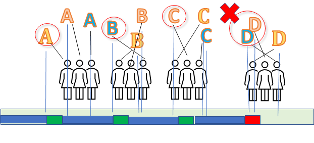
Here's the game:
Goal: Get through the alphabet, one letter at a time. Several people participate.
Each letter: Everyone waits a random amount of time, say from 0 to 3 seconds, then calls out the letter.
Success: Someone calls out the letter, and no one else calls it out within a small interval (say 1 second).
Failure: A CRASH -- two people calling out the letter too close in time.
Restart: After a crash, you have to start at the beginning of the alphabet all over again!
Question: How long should that random interval be to get through the alphabet the fastest (on average)?
So in the picture above, 3 participants, and the crash happens at D.
Too short an interval, eveyone likely to crash.
Too long an interval, too much wasted time waiting for anyone to call out a letter.
No cheating -- everyone has to play by the same rules, and everyone has to choose their time randomly and independently during that interval.
Graphical Solution
DSK has a very inventive solution for the single letter step, at least for the 2-person game:
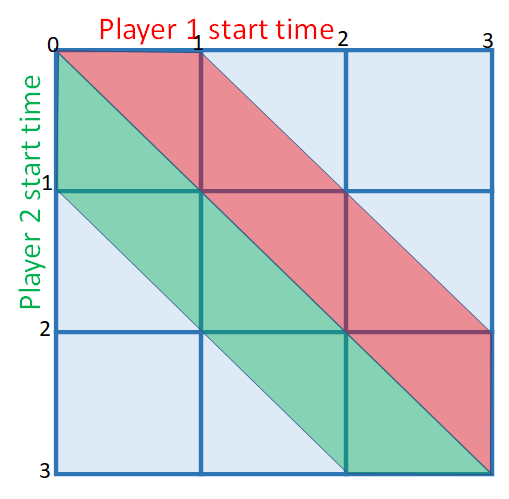
Explantation
This is for 2 players, time interval random over 3 seconds, and 1 second lockout.
Player 1 (in red) starts any time within that 3 seconds, and the red area is locked out.
Player 2 (in green) starts any time within that 3 seconds, and the green area is locked out.
Chance of winning: Blue area/total = 4/9
Extension to different intervals:
If the interval is T instead of 3 seconds, the "blue area" will be:
\( \frac{(T-1)^2}{T^2}\)
Does it scale?
This graphical solution is very clever. But what about more than 2 people? And what is the everage time?
For that, we need to delve into the math.
Formal Description
Each step (letter)
n players
T time interval
1 second lockout
Each player chooses a time randomly (and uniformly) in the interval 0 to T seconds.
If no other player chooses a time less than 1 second after the first time chosen, the step is won
Full game
M letters in alphabet (e.g. 26 in english)
Keep doing steps until:
- M winning steps in a row
- a step is lost. Then start over
Goal
Which T gives the fastest average time to victory?
Solution Strategy
We will find a formula for the average total time.
- We'll use T as the time interval for each letter
- We have n players
- We'll have 1 second as the lockout time (time after the letter is first called out)
- Each letter is independent, so we can figure out the \(p_{win}\) probability as well as \(t_{win}\) and \(t_{loss}\) times.
- Expected time //(Time//) can be computed knowing the formula from each letter, and the alphabet length //(M)//
We can leave 1 second as an explicit number, since any other choice would just scale T and Time
Single letter win
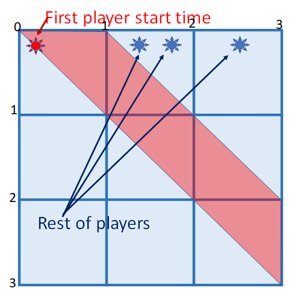
We'll use the same graphical presentation, but modify it for multiple players.
- n random times from 0 to T
- "choose" the first one
- Are all the others >1 second later?
Sorted order
Take n times sorted:
\([t_1,t_2,...t_n]\)
Chance all but first are in "safe" interval:
\((\frac{T-1-t_1}{T})^{n-1}\quad\text{if }t_1<{T-1}\)
\(0\quad\text{if }t_1\geq{T-1}\)
Unsorted
There are n! ways to choose the the order, but we only care about the first one, and the rest can be in any order.
Thus \(\binom{n}{1}=n\)
Single letter: Win probability
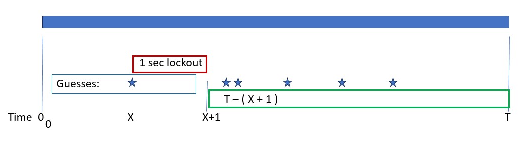
Take n randomly chosen times
- Assume first one is the lowest time (1/n chance)
- First time is x
- chance is \(\frac{dx}{T}\)
- Rest (n-1 people) all after x+1 seconds
- 0 if \(x > T-1\)
- chance \(\frac{T-(x+1)}{T}\) for each
- chance \((\frac{T-(x+1)}{T})^{n-1}\) for all n-1
- n different players could be first
So \(p_{win}=\frac{n}{T} \int_{0}^{T-1} (\frac{T-(x+1)}{T})^{n-1}{dx}=(\frac{T-1}{T})^n\)
Maxima 5.44.0 http://maxima.sourceforge.net
using Lisp GNU Common Lisp (GCL) GCL 2.6.12
Distributed under the GNU Public License. See the file COPYING.
Dedicated to the memory of William Schelter.
The function bug_report() provides bug reporting information.
(%i1) assume (n>1);
(%o1) [n > 1]
(%i2) assume (T>1);
(%o2) [T > 1]
(%i3) (n/T) * integrate( ( (T-(x+1) ) / T ) ^ (n-1) , x, 0, T-1) ,factor ;
n
(T - 1)
(%o3) --------
n
T
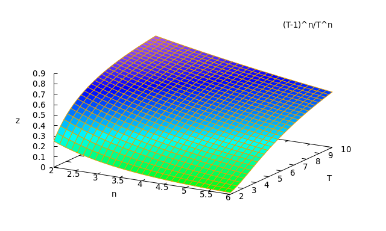
So probability goes down with increasing players (n) and up with increasing time (T).
Single letter: average time
- Using the assumptions from the previous page where \(p_{win}=(\frac{T-1}{T})^n\)
- For first time = x
- Time when win is known is one second later = x+1
- This is the time given a win (no crash).
- The time must be normalized to the probablity of a win
So \(p_{win}*t_{win}=\frac{n}{T} \int_{0}^{T-1} (x+1)(\frac{T-(x+1)}{T})^{n-1}{dx}=\frac{T+n}{n+1}(\frac{T-1}{T})^n=\frac{T+n}{n+1}p_{win}\)
\(t_{win}=\frac{T+n}{n+1}\)
twin:(n/T)*integrate((x+1)*(T-(x+1))^(n-1)/T^(n-1),x,0,T-1)/pwin,expand,factor;
n + T
(%o7) -----
n + 1
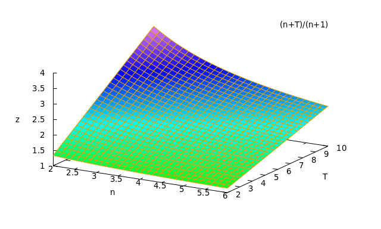
So the time increases with longer interval time (T). The time decreases with increased players (n), since the first player's guess is more likely to be earlier.
Single letter crash
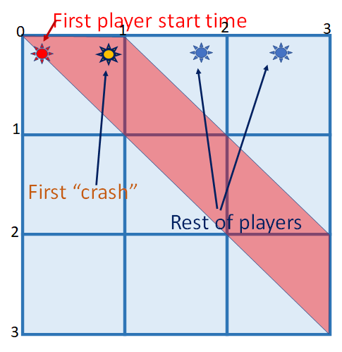
We'll use the same graphical presentation as the win.
- n random times from 0 to T
- "choose" the first one
- "choose" the second one
- Is the second < 1 second after the first? (a crash)
- Are all the others after the second?
Sorted order (t1 < T-1)
Take n times sorted:
\([t_1,t_2,...t_n]\)
Chance second is in "crash" interval:
\(\frac{1}{T}\quad\text{if }t_1<{T-1}\)
Chance rest are after second:
\((\frac{T-t_2}{T})^{n-2}\quad\text{for all }t_2\)
Sorted order (t1 > T-1)
Take n times sorted:
\([t_1,t_2,...t_n]\)
Chance first is in last second:
\(\frac{1}{T}\)
Change rest are after first
\((\frac{T-x}{T})^{n-1}\)
Unsorted (t1 < T-1)
There are n! ways to choose the the order, but we only care about the first two, and the rest can be in any order.
Thus \(\binom{n}{2}=n(n-1)\)
Unsorted (t1 > T-1)
There are n! ways to choose the the order, but we only care about the first one, and the rest can be in any order.
Thus \(\binom{n}{1}=n\)
Single letter: Crash probability
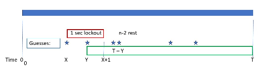
Expectation
\(p_{lose}=1-p_{win}\)
let's prove it!
Calculation
- Let \(t_1=x\quad t_2=y\)
- Separate calculation for x < T-1 where y has full 1 second, and x > T-1 where y has shorter interval
\(p_{lose}=\frac{n(n-1)}{T} \int_{0}^{T-1}\int_{x}^{x+1}(1/T)(\frac{T-y}{T})^{n-2}{dy} \,{dx}+\frac{n}{T} \int_{T-1}^{T}(\frac{T-x}{T})^{n-1}\,{dx}\)
(%i1) assume(n>2);
(%i2) assume(T>1);
(%i3) n*((n-1)/T^2)*integrate(integrate(((T-y)/T)^(n-2),y,x,x+1),x,0,T-1)+(n/T)*integrate(((T-x)/T)^(n-1),x,T-1,T);
Is x - T positive, negative or zero?
negative;
log(T) n log(T - 1) n
(n - 1) n (%e - %e - 1) 1
(%o3) ------------------------------------------- + --
n 2 n
T (n - n) T
(%i4) subst(T^n,%e^(log(T)*n),%);
(%i5) subst((T-1)^n,%e^(log(T-1)*n),%);
(%i6) %,factor;
n n
T - (T - 1)
(%o6) -------------
n
T
(%i7)
%,expand;
n
(T - 1)
(%o7) 1 - --------
n
T
So it works!
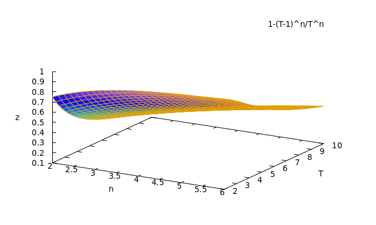
Single letter crash: Average time
Calculation
-
Let \(t_1=x\quad t_2=y\)
-
Separate calculation for x < T-1 where y has full 1 second, and x > T-1 where y has shorter interval
-
x < T-1
- time of loss = y
-
x > T-1
- time of loss = T-1
-
Again need to normalize by \(p_{loss}\)
\(p_{loss}*t_{loss}=\frac{n(n-1)}{T} \int_{0}^{T-1}\int_{x}^{x+1}(1/T)y(\frac{T-y}{T})^{n-2}{dy} \,{dx}+\frac{n}{T} \int_{T-1}^{T}(T-1)(\frac{T-x}{T})^{n-1}\,{dx}\)
\(\)
(%i14) unnormalized_tloss:n*(n-1)*T^(-n)*integrate(integrate(y*(T-y)^(n-2),y,x,x+1),x,0,T-1)+n*T^(-n)*(T-1)*integrate((T-x)^(n-1),x,T-1,T);
(%i15) subst((T-1)^n,%e^(log(T-1)*n),%);
(%i16) subst(T^n,%e^(log(T)*n),%);
(%i17) %,factor;
(%i18) tloss:%/(1-pwin);
(%i19) %,factor;
n n + 1 n n
(T - 1) n - 2 T + 2 (T - 1) T - (T - 1) + 2
(%o19) - ---------------------------------------------------
n n
(T - (T - 1) ) (n + 1)
\(t_{loss}=-{{\left(T-1\right)^{n}\,n-2 \,T^{n+1}+2\,\left(T-1\right)^{n}\,T- \left(T-1\right)^{n}+2}\over{\left(T^{n}-\left(T-1\right)^{n}\right) \,\left(n+1\right)}}\)
or
\(t_{loss}=\frac{2\,T}{n+1}-\frac{2\,+\,(n-1)(T-1)^n}{(n+1)(T^n-(T-1)^n)}\)
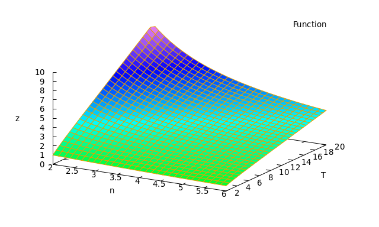
\(\lim_{T \to \infty} t_{loss}=\frac{2(n-1)}{n(n+1)}T\)
Full Alphabet
The game is not just a single letter, but an alphabet of M letters, with restarts after any crashes.
To solve, we'll use a general "recurrence" approach:
This means:
- We sum over all the lengths of wins < M with then a loss
- chance is \(p_{win}^i\,p_{loss}\)
- contribution to whatever quantity is
- i * wins
- 1 loss
- Game expected quantity (for restart)
- and add the M straight wins case
- chance \(p_{win}^M\)
- M * wins
\(Quantity = \sum_{i=0}^{M-1}{p_{win}}^ip_{loss}(i\,q_{win}+q_{loss}+Quantity)+{p_{win}}^M(M\,q_{win}+q_{victory})\)
Explanation:
- \(Quantity\) is what we're assessing (like probability, time, ...)
- \(q_{win}\) is the value of a step win
- \(q_{loss}\) is the value of a step loss
- \(q_{victory}\) is the value of a total win
- \(q_{failure}\) is not needed since this game always eventually completes
We can do some simplification using the formula for a geometric series
\(\sum_{i=0}^{M-1}{p_{win}}^i = \frac{1-{p_{win}}^M}{1-p_{win}} = \frac{1-{p_{win}}^M}{p_{loss}}\)
So:
\(Quantity = \sum_{i=0}^{M-1}{p_{win}}^ip_{loss}i\,q_{win}+\sum_{i=0}^{M-1}{p_{win}}^ip_{loss}q_{loss}+\sum_{i=0}^{M-1}{p_{win}}^ip_{loss}Quantity+{p_{win}}^M(M\,q_{win}+q_{victory})\)
Becomes:
\(Quantity = \sum_{i=0}^{M-1}{p_{win}}^ip_{loss}i\,q_{win}+(1-{p_{win}}^M)q_{loss}+(1-{p_{win}}^M)Quantity+{p_{win}}^M(M\,q_{win})+{p_{win}}^M\,q_{victory}\)
Solving for Quantity
\({p_{win}}^M Quantity = q_{win}\,p_{loss}\sum_{i=0}^{M-1}{i\,{p_{win}}^i}+q_{loss}\,(1-{p_{win}}^M)+M\,q_{win}\,{p_{win}}^M+q_{victory}\,{p_{win}}^M\)
The series i*p^i also has a closed-form expression:
\(\sum_{i=0}^{M-1}{i\,{p_{win}}^i} = \frac{(M-1){p_{win}}^{M+1}-M{p_{win}}^M+p_win}{(1-p_{win})^2}\)
Substituting and combining with the last term:
\({p_{win}}^M Quantity = q_{win}\frac{p_{win}-{p_{win}}^{M+1}}{1-p_{win}}+q_{loss}\,(1-{p_{win}}^M)+q_{victory}\,{p_{win}}^M\)
Finally:
\(Quantity = \left(\frac{1-{p_{win}}^M}{{p_{win}}^M}\right)\left(q_{loss}+\frac{p_{win}}{1-p_{win}}q_{win}\right)+q_{victory}\)
Analysis
There are 3 components of Q
\(Quantity = \left(\frac{1-{p_{win}}^M}{{p_{win}}^M}\right)\left(q_{loss}+\frac{p_{win}}{1-p_{win}}q_{win}\right)+q_{victory}\)
The only part that contains M -- the alphabet length
\(\left(\frac{1-{p_{win}}^M}{{p_{win}}^M}\right)\)
The part that depends just on a single step
\(\left(q_{loss}+\frac{p_{win}}{1-p_{win}}q_{win}\right)\)
Constant victory component
\(q_{victory}\)
Full Alphabet: Probability
We expect this to be 1 since the game rules are to keep restarting until a victory
From our initial analysis
\(Quantity = \left(\frac{1-{p_{win}}^M}{{p_{win}}^M}\right)\left(q_{loss}+\frac{p_{win}}{1-p_{win}}q_{win}\right)+q_{victory}\)
where \(q_{win}=0\)
\(q_{loss}=0\)
\(q_{victory}=1\)
So:
\(P=1\)
since none of the intermediate values contribute to the final probability.
Full Alphabet: Time
We already know the average time for a win or loss for each step (letter): \(t_{win},t_{loss}\)
From our initial analysis
\(Quantity = \left(\frac{1-{p_{win}}^M}{{p_{win}}^M}\right)\left(q_{loss}+\frac{p_{win}}{1-p_{win}}q_{win}\right)+q_{victory}\)
where \(q_{win}=t_{win}\)
\(q_{loss}=t_{loss}\)
\(q_{victory}=0\)
\(Time = \left(\frac{1-{p_{win}}^M}{{p_{win}}^M}\right)\left(t_{loss}+\frac{p_{win}}{1-p_{win}}t_{win}\right)\)
Full Alphabet: Length
How many letters, on average, will we go though?
From our initial analysis
\(Quantity = \left(\frac{1-{p_{win}}^M}{{p_{win}}^M}\right)\left(q_{loss}+\frac{p_{win}}{1-p_{win}}q_{win}\right)+q_{victory}\)
where \(q_{win}=1\)
\(q_{loss}=1\)
\(q_{victory}=0\)
since each step counts as 1 but winning doesn't add another letter.
\(Length = \left(\frac{1-{p_{win}}^M}{{p_{win}}^M}\right)\left(1+\frac{p_{win}}{1-p_{win}}\right) = \left(\frac{1-{p_{win}}^M}{{p_{win}}^M}\right)\left(\frac{1}{1-p_{win}}\right)\)
Not very well behaved for low probability steps.
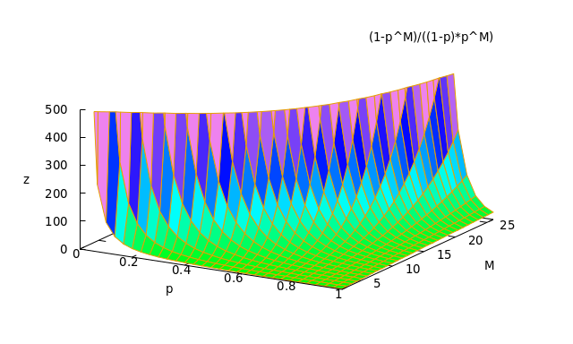
Cut off at 500 length.